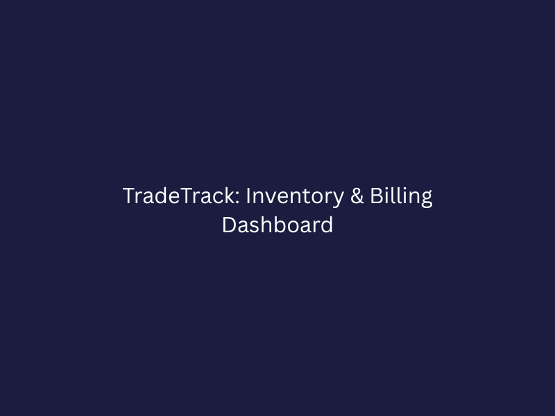
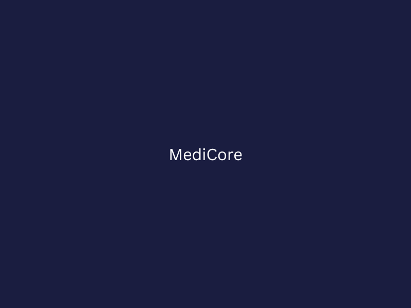

My Projects
Hands-on infrastructure and DevOps work that drives real reliability
2
Projects
2.5+
Years Experience
10+
Technologies

Observability & Monitoring Platform
Azure Monitor
Grafana
ELK Stack
Logstash
Centralized dashboards and alerting system for multi-tier application stacks — reduced unplanned downtime by 20% through proactive anomaly detection.

Linux-Based Load Balancer (NGINX)
NGINX
Linux
Reverse Proxy
HA Architecture
Configured NGINX as a Layer 7 reverse proxy and load balancer for a microservices application, enabling rolling deployments and eliminating single points of failure.
Interested in working together?
I'm open to Cloud & DevOps opportunities and collaborations.
Get in Touch